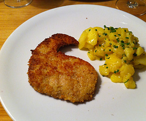

Kartoffelsalat Österreicherart
5 von 61 kg festkochende Kartoffeln schwellen, etwas abkühlen und schälen. In feine Scheiben schneiden und in eine Schüssel geben. 2.5 dl warme Bouillon mit 3 El Essig, etwas Senf, Salz und pfeffer vermengen und darüber geben. Eine Stunde ziehen lassen und mit Wienerschnitzel servieren.
